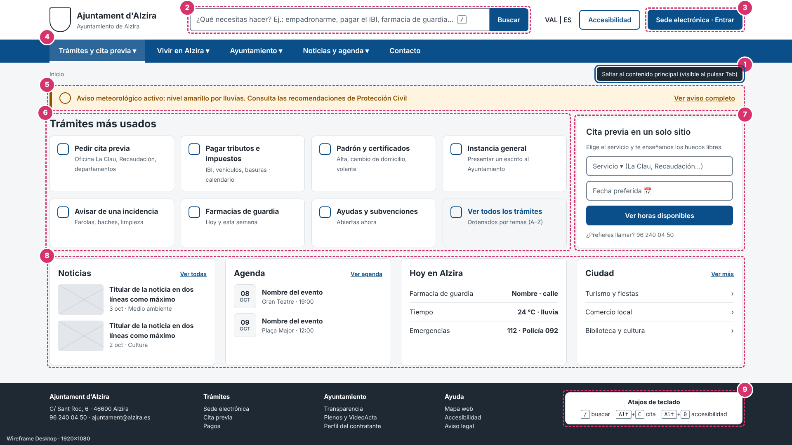
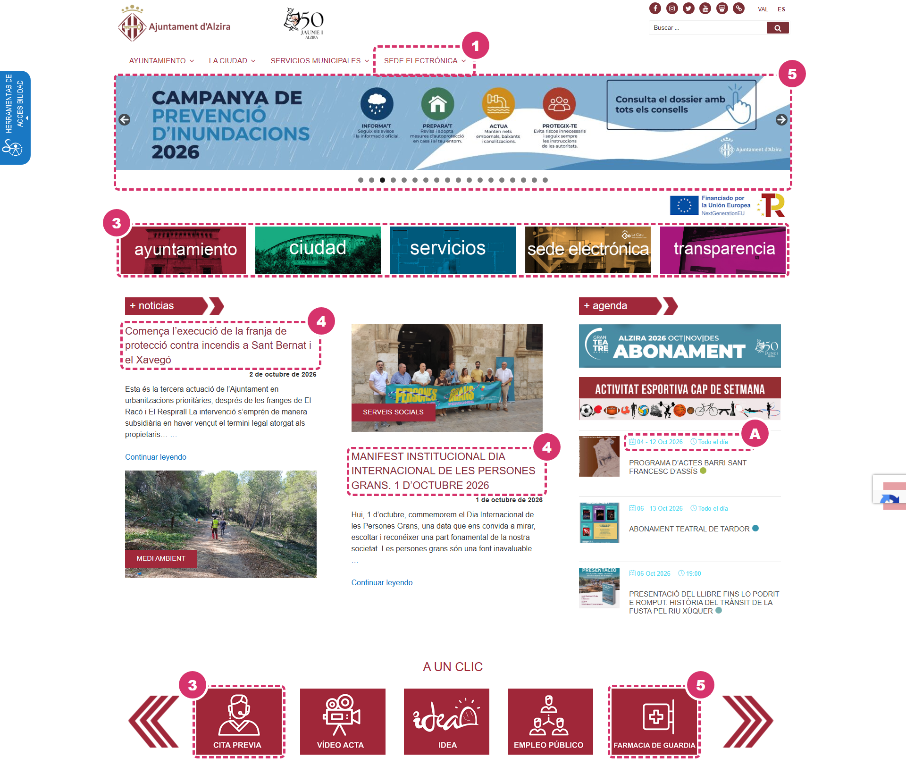
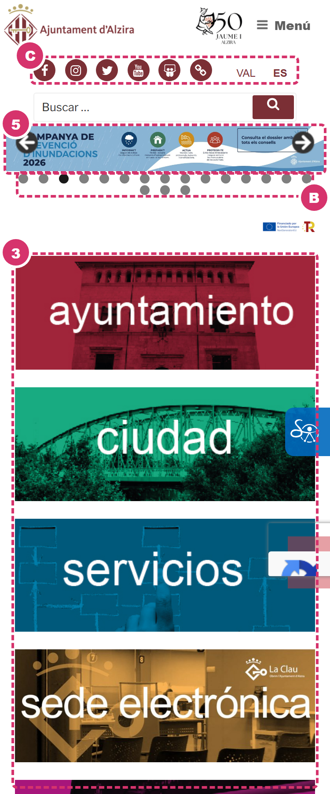
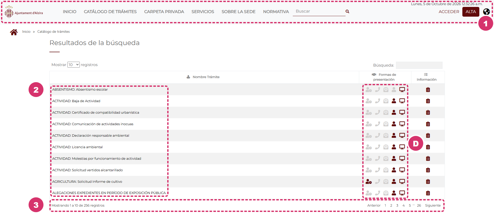
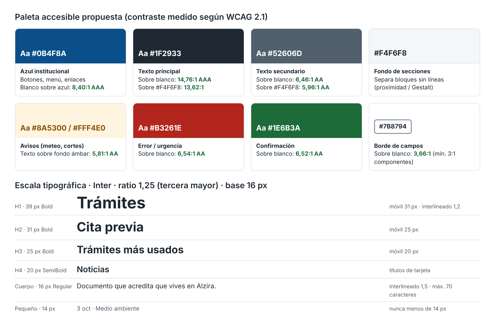
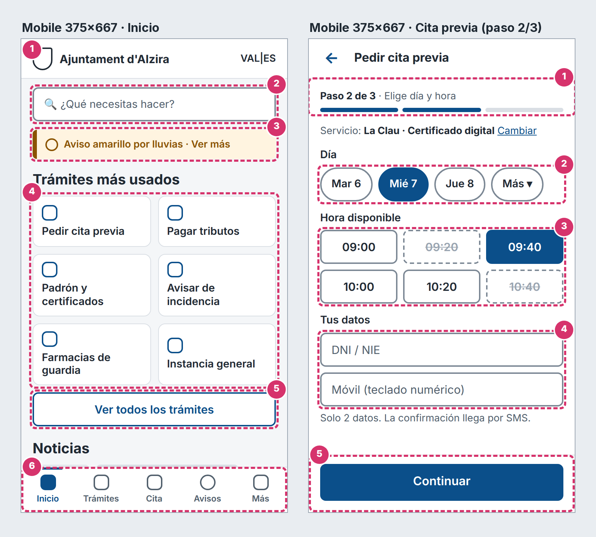
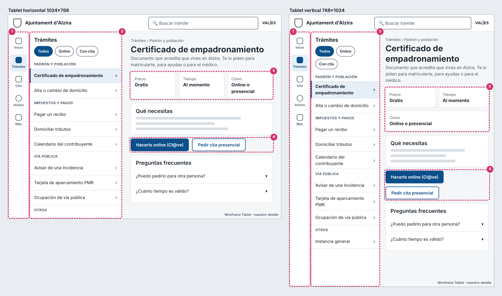

Para esta actividad he elegido la web del Ajuntament d'Alzira (alzira.es), junto con las webs a las que te manda cuando quieres hacer algo: la sede electrónica (sedeelectronica.alzira.es), el sistema de cita previa (citaprevia.alzira.es) y la oficina tributaria (alzira.tributoslocales.es). La he elegido porque es la de mi ciudad y porque la he tenido que usar alguna vez para cosas normales, como pedir cita en La Clau o buscar la farmacia de guardia, y siempre acabo perdiéndome entre páginas.
Lo que analizo es la versión web, tanto en ordenador como en el móvil, porque el Ayuntamiento no tiene una app propia para hacer trámites. El tipo de usuario que he tenido en mente es un vecino cualquiera que entra a hacer una gestión concreta (empadronarse, pagar un recibo, pedir cita) y quiere terminar rápido, no alguien que va a leer las noticias con calma.
He seguido las tres fases del enunciado. Primero hice la inspección heurística con las 10 heurísticas de Nielsen y apunté cada problema con su severidad de 0 a 4. Después revisé el color, el contraste según WCAG 2.1, la tipografía, las leyes de UX y los principios CRAP. Con eso diseñé los wireframes en media fidelidad para escritorio, móvil y tablet. Cada decisión del rediseño la he relacionado con uno de los problemas encontrados, para que no sea un cambio "porque queda más bonito".
Las capturas son de la versión en castellano (alzira.es/es/), hechas el 5 de octubre de 2026. Cada número es el problema de la matriz del apartado 2.2 que se ve en ese sitio (1 = P1, 2 = P2…) y cada letra, un fallo visual del apartado 2.3.



Todos los problemas son de la versión web (escritorio y móvil). La severidad sigue la escala de Nielsen: 0 no es problema, 1 cosmético, 2 menor, 3 mayor y 4 catástrofe de usabilidad.
| # | Problema | Heurística infringida | Sev. | Dónde lo resuelvo |
|---|---|---|---|---|
| P1 | Los trámites están repartidos en cuatro webs con diseños distintos | H4 Consistencia y estándares (y H3 Control y libertad) | 3 | Desktop 3 y 7 · Mobile cita · Tablet 4 |
| P2 | Nombres de trámites en lenguaje administrativo y en mayúsculas | H2 Relación entre el sistema y el mundo real | 3 | Desktop 2 y 6 · Tablet 2 y 3 |
| P3 | Los trámites se ordenan por departamento y no por lo que quiere hacer el usuario | H6 Reconocer antes que recordar (y H7 Flexibilidad y eficiencia) | 3 | Desktop 6 · Mobile 4 y 6 · Tablet 1 y 2 |
| P4 | Valenciano y castellano mezclados en la versión en castellano | H4 Consistencia y estándares | 2 | Cabecera VAL | ES en las tres plataformas |
| P5 | Información que se usa todos los días (farmacia de guardia, avisos) poco visible y con nombres que no coinciden | H1 Visibilidad del estado del sistema (y H2) | 2 | Desktop 5 y 8 · Mobile 3 |
Para hacer gestiones con el Ayuntamiento hay en realidad cuatro webs: la principal (alzira.es), la sede electrónica (sedeelectronica.alzira.es), la de cita previa (citaprevia.alzira.es) y la Oficina Virtual Tributaria para pagar impuestos (alzira.tributoslocales.es). Todas salen del mismo menú "Sede electrónica", pero cada una tiene su cabecera, su menú, su tipo de letra y su forma de navegar. En la sede, por ejemplo, la letra es Montserrat y el rojo es otro (#610B0B), y la oficina tributaria se abre en valenciano aunque vengas de la versión en castellano. Para pedir cita entras en Servicios municipales → Cita Previa → "Solicitar cita previa con La Clau", y de ahí te manda a otra web que no se parece en nada y que no tiene el menú de la principal.
Impacto: el usuario no sabe si sigue en la web oficial, pierde el menú para volver y tiene que aprender a manejar cada web por separado. A una persona mayor esto le puede hacer pensar que se ha equivocado y abandonar el trámite.
Mejora: un único punto de entrada, "Trámites y cita previa", con la misma cabecera en todas las pantallas y la cita previa integrada en la propia página (servicio, fecha y horas libres en un solo bloque). La sede se queda como un botón fijo "Sede electrónica · Entrar".
En el catálogo de la sede hay 256 trámites con nombres como "PADRÓN HABITANTES: Alta en el Padrón Municipal de Habitantes" o "ACTIVIDAD: Licencia ambiental", con la primera parte en mayúsculas y siguiendo el nombre interno del expediente. Ese prefijo ni siquiera se escribe siempre igual: hay "PADRÓN HABITANTES", "PADRON HABITANTES" y "PADRÓN DE HABITANTES". Además, la primera categoría del menú del catálogo sigue siendo "00 COVID-19", cuando ya no es lo que busca la gente.
Impacto: el usuario piensa en "quiero empadronarme" o "me he cambiado de piso", no en "alta en el padrón". Si no conoce la palabra exacta, no lo encuentra. Además, el texto en mayúsculas se lee peor porque se pierde la forma de las palabras.
Mejora: un buscador grande que pregunta "¿Qué necesitas hacer?" con ejemplos reales, títulos en minúscula y escritos como una tarea, y una ficha de cada trámite con tres datos claros: precio, tiempo y cómo se hace.
La web está montada siguiendo el organigrama del Ayuntamiento. El menú principal tiene Ayuntamiento, La ciudad, Servicios municipales y Sede electrónica, y solo Servicios municipales despliega 24 enlaces, uno por departamento (Área económica, OMIC, SERVAL, Serveis Urbans…). Debajo del carrusel, cinco losetas grandes repiten lo mismo. Los trámites habituales solo tienen acceso directo en el carrusel "A UN CLIC", que está casi al final de la portada (fuera de la primera pantalla), enseña 5 iconos de 17, va cambiando solo cada 5 segundos y mezcla trámites con cosas que no lo son, como Vídeo acta, la wifi pública o el tiempo. Al final el usuario tiene que recordar qué departamento lleva cada cosa.
Impacto: hay que hacer varios clics de prueba y error y volver atrás. Además, según la Ley de Hick, cuantas más opciones parecidas hay en cada menú, más tarda el usuario en decidirse. En la sede, el menú del catálogo tiene 30 categorías antes de llegar a un trámite.
Mejora: un bloque de "Trámites más usados" en la portada con las 7 tareas más comunes más "Ver todos". En móvil, una barra de pestañas fija con Trámites y Cita. En tablet, una lista maestra agrupada por temas que se entienden, como "Padrón y población" o "Impuestos y pagos".
En la versión en castellano (las direcciones que empiezan por /es/) mucho contenido sigue en valenciano. En la portada, las dos noticias ("Comença l'execució de la franja de protecció contra incendis…"), sus etiquetas ("SERVEIS SOCIALS", "MEDI AMBIENT") y el banner de la campaña de inundaciones están en valenciano. En el menú salen "Serveis Urbans", "Esports" o "Establimets amb tarjeta", que además está mal escrito. Y lo más raro: varios enlaces del menú en castellano, como "Cita Previa" o "Tablón de anuncios", te llevan a la página en valenciano, así que cambias de idioma sin haberlo elegido. En la página de farmacias el título está en castellano pero el texto está en valenciano.
Impacto: no es grave para quien entiende los dos idiomas, pero sí para quien acaba de llegar a Alzira, y da sensación de web descuidada, lo que resta confianza en un sitio oficial.
Mejora: un selector VAL | ES siempre visible en la cabecera, con el idioma activo subrayado, y contenidos completos en los dos idiomas. Lo repito igual en escritorio, móvil y tablet.
La farmacia de guardia es de lo más buscado en una web municipal. En el menú está dentro de "La ciudad" con el título "FARMACIAS DE URGENCIA", en mayúsculas, aunque la gente (y hasta el propio icono de la portada) lo llama "farmacia de guardia". Ese icono está en el carrusel "A UN CLIC", al final de la página, y solo se ve cuando le toca salir. Los avisos importantes tampoco tienen un sitio fijo: la campaña de prevención de inundaciones y el enlace a los avisos de AEMET son 2 de los 18 banners del carrusel de arriba, que cambia cada 3 segundos, mezclados con anuncios de la feria comercial, un concierto o la app para pagar la zona azul.
Impacto: justo cuando el usuario tiene prisa (alguien enfermo por la noche, una alerta meteorológica), tiene que buscar en lugar de verlo directamente.
Mejora: una franja de aviso en color ámbar, debajo de la cabecera, que solo aparece si hay una alerta activa, y un bloque "Hoy en Alzira" con la farmacia de guardia, el tiempo y los teléfonos de emergencia.
Fuentes de los datos: alzira.es/es/ (portada y secciones Servicios municipales, Cita previa, La Clau y Farmacias), catálogo de trámites de sedeelectronica.alzira.es, citaprevia.alzira.es y alzira.tributoslocales.es, consultadas el 5 de octubre de 2026.
Los colores los he sacado de la web real con getComputedStyle y el contraste lo he calculado con la fórmula de luminancia relativa de WCAG 2.1. El color principal es un granate (menú, títulos y botón de buscar), pero cada loseta de la portada tiene su propio color (rojo, verde, azul, ocre y magenta), los enlaces son azules y la agenda usa un azul claro, así que no hay una paleta clara. La sede, encima, usa otro rojo.
| Color | Uso | Sobre | Contraste | Cumple 4,5:1 / 3:1 |
|---|---|---|---|---|
| #333333 | Texto de las noticias | #FFFFFF | 12,63:1 | Sí (AAA) |
| #A0283A | Menú principal | #FFFFFF | 7,34:1 | Sí (AAA) |
| #8A2C3B | Títulos de noticias | #FFFFFF | 8,39:1 | Sí (AAA) |
| #056BBF | Enlaces "Continuar leyendo" | #FFFFFF | 5,44:1 | Sí (AA) |
| #7B2F35 | Fondo del botón de buscar | texto blanco | 9,13:1 | Sí (AAA) |
| #EEEEEE | Fondo del pie (texto #333333) | — | 10,89:1 | Sí (AAA) |
| #40D9F1 | Fechas y horas de la agenda (A) | #FFFFFF | 1,69:1 | No, ni 3:1 |
| #808080 | Menú de la sede (16 px) | #F8F9FA | 3,75:1 | No llega a 4,5:1 |
| #D1CFCE | Iconos "no disponible" de la sede (D) | #FFFFFF | 1,55:1 | No llega a 3:1 |
Casi todo el texto cumple. Lo peor son las fechas de la agenda, que casi no se ven, y los iconos de la sede, que dicen si el trámite se puede hacer por teléfono, en persona o por internet y solo se distinguen por el color, algo que WCAG no permite (criterio 1.4.1).
alzira.es no carga ninguna fuente: en el CSS solo pone sans-serif, así que cada dispositivo usa la suya (en Windows, Arial). La sede usa Montserrat. La portada no tiene ningún h1 y los tamaños reales son: "A UN CLIC" (h2) 26 px, títulos de noticias (h3) 22 px, cuerpo 16 px, menú 15,4 px en mayúsculas, agenda 15 px y VAL/ES 12 px. No hay una escala clara: de 26 a 22 y a 16 casi no hay salto y los títulos llevan font-weight 100, que en Arial se ve como texto normal, así que la jerarquía la marca el color más que el tamaño. Las mayúsculas tampoco siguen un criterio (una noticia en minúscula y la de al lado en mayúsculas), y en el móvil los banners se reducen de 1430 a 361 px de ancho y su letra pequeña no se lee.
| Ley | Dónde se incumple en el original |
|---|---|
| Hick | Muchas opciones parecidas en cada nivel: 24 enlaces por departamentos en Servicios municipales y 30 categorías en el catálogo de la sede antes de llegar a un trámite. Elegir cuesta más tiempo. |
| Jakob | La gente está acostumbrada a webs de administración con un buscador central y un botón de "Sede / Entrar" arriba a la derecha (como en la mayoría de webs de la administración). Aquí cada una de las cuatro webs tiene su propia estructura, así que lo aprendido en una no sirve en las otras. |
| Miller | Listas largas sin agrupar (catálogo de trámites, enlaces de cada departamento) obligan a retener muchos elementos a la vez en lugar de grupos de 5–9. |
| Fitts | Medido en el móvil: iconos de redes de 25 × 25 px, VAL y ES de 24 px de alto, botón de buscar de 47 × 27, flechas del carrusel de 30 × 30 y 18 puntos de 11 × 11 px muy juntos (B y C), todo por debajo de los 44 × 44 px que recomienda WCAG 2.1 (2.5.5). En cambio, las losetas miden 341 × 129 px y solo repiten el menú. |
| Von Restorff | Lo que más destaca son las cinco losetas de colores y el carrusel. Como destacan a la vez, no destaca nada, y lo que sí debería resaltar (un aviso o la cita previa) queda entre banners de ferias y conciertos o al final de la página. |
Contraste: casi todo tiene el mismo peso; los títulos son finos y apenas más grandes que el texto, y las losetas de colores fuertes le quitan protagonismo a lo importante. Repetición: el granate se repite en menú, títulos y etiquetas, pero los enlaces son azules, la agenda usa otro azul y la sede cambia de rojo, de letra y de botones, así que no parece la misma web. Alineación: en la captura 1 el carrusel empieza en x = 245 px, las losetas en 255 y las noticias en 265, y "A UN CLIC" va centrado mientras "+ noticias" y "+ agenda" van a la izquierda. Proximidad: en la primera noticia la foto va debajo del texto y en la segunda encima del título, así que la foto de abajo parece de otra noticia; y el logo de los fondos europeos queda suelto entre el carrusel y las losetas.

El color principal es un azul institucional oscuro porque transmite seriedad y confianza, justo lo que se espera de un ayuntamiento, y es el que usan casi todas las webs públicas (Ley de Jakob). El resto son grises para el texto y tres colores con significado fijo: ámbar para avisos, rojo para errores y verde para confirmaciones. El color nunca es la única pista: los avisos llevan icono y texto.
| Color | Uso | Pareja medida | Contraste | WCAG 2.1 |
|---|---|---|---|---|
| #0B4F8A | Botones, menú, enlaces | blanco sobre azul | 8,40:1 | AAA |
| #1F2933 | Texto principal, pie | sobre #FFFFFF / #F4F6F8 | 14,76:1 / 13,62:1 | AAA |
| #52606D | Texto secundario | sobre #FFFFFF / #F4F6F8 | 6,46:1 / 5,96:1 | AA |
| #8A5300 | Texto de avisos | sobre #FFF4E0 | 5,81:1 | AA |
| #B3261E | Errores / urgencias | sobre blanco | 6,54:1 | AA |
| #1E6B3A | Confirmaciones | sobre blanco | 6,52:1 | AA |
| #7B8794 | Bordes de campos | sobre blanco | 3,66:1 | AA (≥ 3:1 componentes) |
Todo el texto supera 4,5:1 y los bordes de campos superan 3:1 (mínimo para componentes). El enlace azul sobre el gris de secciones da 7,75:1. Las horas ocupadas de la cita (#9AA5B1) quedan por debajo, pero son elementos desactivados, que WCAG excluye, y además van tachadas.
Uso Inter, una sin serifa pensada para pantalla. La escala es de tercera mayor (ratio 1,25) partiendo de 16 px: 16, 20, 25, 31 y 39 px. En móvil bajo un escalón cada título para que no ocupe media pantalla. El cuerpo nunca baja de 16 px, el texto pequeño nunca de 14 px, el interlineado es de 1,5 y las líneas no pasan de unos 70 caracteres, para que se pueda leer un rato sin cansarse.
Jakob: logo arriba a la izquierda, buscador en el centro, acceso a la sede arriba a la derecha y barra de pestañas abajo en el móvil, como en cualquier app. Hick: 5 apartados en el menú principal y 8 accesos en "Trámites más usados". Fitts: botones de mínimo 48 px de alto y el botón principal de la cita ocupa todo el ancho y se queda abajo, en la zona del pulgar. Miller: los trámites van en grupos pequeños con un título de tema. Von Restorff: solo hay un botón relleno de azul por pantalla, así que la acción principal destaca sola. Gestalt (proximidad y región común): tarjetas blancas sobre gris que separan bloques sin líneas. CRAP: contraste fuerte entre títulos y texto, los mismos componentes repetidos en las tres plataformas, todo alineado a una rejilla y cada etiqueta pegada a su campo.
Los wireframes son de media fidelidad: ya llevan la paleta y la tipografía reales, pero las imágenes son marcadores (cajas con aspa) y los iconos son cuadrados. Los números en círculo rosa y los recuadros discontinuos son solo anotaciones y no forman parte del diseño.

En el móvil no he encogido la versión de escritorio. He quitado las columnas, he dejado solo lo que se usa con una mano y he bajado la navegación a la zona del pulgar.

En tablet uso el patrón maestro-detalle: a la izquierda la lista de trámites y a la derecha la ficha del que has elegido, así no tienes que ir y volver de página en página. Es el mismo diseño en las dos orientaciones. Lo único que cambia al girar la tablet es que la lista se estrecha un poco y los datos de la ficha pasan de 3 columnas a 2. No hay que rehacer nada, la rejilla se adapta sola.
| Indicador | Antes (web actual) | Después (rediseño) |
|---|---|---|
| Webs distintas para informarse y pedir cita | 2 o más (alzira.es + citaprevia.alzira.es, y la sede para tramitar) | 1, con la misma cabecera siempre |
| Clics desde la portada hasta empezar a pedir cita | 3 como mínimo y cambio de web (Servicios municipales → Cita Previa → "Solicitar cita previa con La Clau" → "Solicitud de cita", ya en citaprevia.alzira.es) | 0 en escritorio (bloque en la portada) y 1 en móvil (pestaña Cita) |
| Trámites frecuentes con acceso directo en la portada | Algunos (cita previa, farmacia…), pero en un carrusel de 17 iconos que enseña 5 y está al final de la portada | 7 + "Ver todos" |
| Contraste mínimo del texto | 1,69:1 (fechas de la agenda, #40D9F1 sobre blanco) | 5,51:1 (todas las parejas AA o AAA) |
| Tamaño mínimo de botones táctiles | 11 × 11 px (puntos del carrusel); iconos de redes de 25 × 25 px | 48 × 48 px |
| Datos personales para pedir cita | Formulario de la web externa | 2 campos (DNI y móvil) |
| Problemas graves (severidad ≥ 3) sin resolver | 3 (P1, P2, P3) | 0 en los wireframes |
La mayor mejora es que la web pasa a estar organizada por lo que quiere hacer el vecino y no por cómo está organizado el Ayuntamiento por dentro. Eso, junto con el buscador por tareas y los nombres en lenguaje normal, hace que alguien que no sabe nada de administración pueda encontrar un trámite sin ayuda. También se gana confianza, porque todo se ve como una sola web oficial y no como cuatro distintas, y se gana accesibilidad: la paleta cumple WCAG AA, se puede navegar con teclado y los botones tienen un tamaño cómodo para el dedo.
En cuanto a las plataformas, cada una tiene su patrón: en escritorio se aprovecha el ancho con 4 columnas y atajos de teclado, en el móvil se va a una columna con todo al alcance del pulgar, y en la tablet el maestro-detalle permite consultar varios trámites seguidos sin perder la lista.
Con esta actividad me he dado cuenta de que la mayoría de los fallos de la web del Ayuntamiento no son de que sea "fea", sino de organización y de lenguaje. Por eso el rediseño cambia sobre todo la estructura y no solo los colores. Como siguiente paso, lo suyo sería probar los wireframes con 4 o 5 vecinos de distintas edades, pidiéndoles tareas concretas (pedir cita, buscar la farmacia de guardia) y midiendo el tiempo y los errores, para comprobar que las mejoras funcionan de verdad.
Referencias: Nielsen, J. "10 Usability Heuristics for User Interface Design" (NN/g) · W3C, Web Content Accessibility Guidelines (WCAG) 2.1 · Yablonski, J. Laws of UX · Williams, R. The Non-Designer's Design Book (CRAP) · Apuntes de la Unidad 1 de Desarrollo de Interfaces.